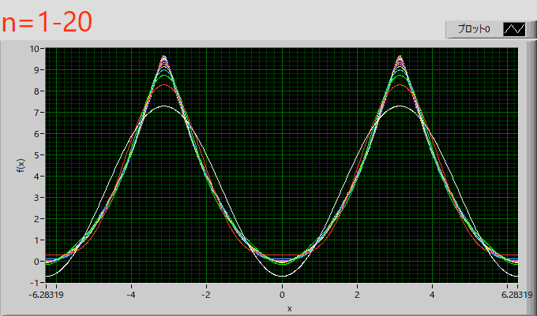

フーリエ級数展開-10
次はx2の波形，こちら，を参考にしました．
・x2の波形
x2の波形，
\( \Large \displaystyle f(x) = x^2 \hspace{20pt} ( - \pi \leq x < \pi) \)
の場合を考えます．
フーリエ級数展開は，周期が ‐π～π，の場合には，
\( \Large \displaystyle f(x) = \color{red}{\frac{a_0}{2}} + \sum_{n=1}^{ \infty} \left( a_n \ cos \ (n x) + b_n \ sin \ (n x) \right) \)
\( \Large \displaystyle a_0 = \color{red}{\frac{1}{\pi}} \int_{- \pi}^{ \pi} f(x) \ dx \)
\( \Large \displaystyle a_n = \frac{1}{\pi} \int_{ - \pi}^{ \pi} f(x) \ cos \ \left( nx \right) \ dx \)
\( \Large \displaystyle b_n = \frac{1}{\pi} \int_{ - \pi}^{ \pi} f(x) \ sin \ \left( nx \right) \ dx \)
は，ここ，で解説しました．
・a0
積分範囲によって，f(x)の値が異なるので，それぞれの領域の積分に分けていきます．
\( \Large \displaystyle \frac{a_0}{2}
= \frac{1}{2 \pi} \int_{- \pi}^{ \pi} x^2 \ dx
= \frac{1}{2 \pi} \left[ - \frac{1}{3} x^3 \right]_{- \pi}^{\pi}
= \frac{1}{2 \pi} \left\{ \frac{1}{3} \pi^3 - \frac{1}{3} \pi^3 \right\} = \color{red}{\frac{1}{3} \pi^2 }
\)
・an
\( \Large \displaystyle a_n = \frac{1}{\pi} \int_{ - \pi}^{ \pi} x^2 \cdot cos( nx ) \ dx \)
ですが，f(x)，cos (nx)，ともに偶関数となります．したがって，積分範囲を半分（0～π）で計算して2倍すればいいことになりますので，
\( \Large \displaystyle a_n = \frac{2}{\pi} \int_{ 0}^{ \pi} x^2 \cdot cos( nx ) \ dx \)
これは，ここ，で説明した，瞬間部分積分，を使えば簡単に解け，
\( \Large \displaystyle \int x^2 \ cos \ (n x) \ dx \)
を考えていきます．瞬間部分積分を使えば，
| + | x2 | \( \Large \displaystyle \frac{1}{n} sin \ (n x) \) |
| - | 2x | \( \Large \displaystyle -\frac{1}{n^2} cos \ (n x) \) |
| + | 1 | \( \Large \displaystyle - \frac{1}{n^3} sin \ (n x) \) |
\( \Large \displaystyle \int x^2 \ cos \ (n x) \ dx =\frac{1}{n} x^2 \ sin \ ( n x) + \frac{2}{n^2} x \ cos \ (nx) -\frac{2}{n^3} \ sin \ ( n x)+ C\)
となります．したがって，
\( \Large \displaystyle a_n = \frac{2}{\pi} \int_{ 0}^{ \pi} x^2 \cdot cos( nx ) \ dx \)
\( \Large \displaystyle = \frac{2}{\pi} \left[ \frac{1}{n} x^2 \ sin \ ( n x) + \frac{2}{n^2} x \ cos \ (nx) -\frac{2}{n^3} \ sin \ ( n x) \right]_{ 0}^{ \pi} \)
sin，の項が０となるので簡単になり，
\( \Large \displaystyle = \frac{2}{\pi} \left[ \frac{1}{n} x^2 \ sin \ ( n x) + \frac{2}{n^2} x \ cos \ (nx) -\frac{2}{n^3} \ sin \ ( n x) \right]_{ - \pi}^{ \pi} \)
\( \Large \displaystyle = \frac{2}{\pi^2} \frac{2}{n^2} \pi \ cos \ ( n \pi) \)
\( \Large \displaystyle = \frac{4}{n^2}(-1)^n \)
\( \Large = \left\{ \begin{array}{c} \hspace{10pt} \frac{4}{ n^2} \hspace{20pt} ( n \ is \ even ) \\ \hspace{20pt} - \frac{4}{ n^2} \hspace{20pt} ( n \ is \ odd) \end{array} \right. \)
となります．
・bn
\( \Large \displaystyle b_n = \frac{1}{\pi} \int_{ - \pi}^{ \pi} x^2 \ sin \ \left( nx \right) \ dx \)
ですが，奇関数×偶関数＝奇関数なので，-πからπまで積分すれば０となりますね．
\( \Large \displaystyle b_n =0 \)
となります．
したがって，まとめると，
\( \Large \displaystyle a_0 = \frac{1}{3} \pi^2 \)
\( \Large a_n = \left\{ \begin{array}{c} \hspace{10pt} \frac{4}{ n^2} \hspace{20pt} ( n \ is \ even ) \\ \hspace{20pt} - \frac{4}{ n^2} \hspace{20pt} ( n \ is \ odd) \end{array} \right. \)
\( \Large \displaystyle b_n = 0 \)
となるので，
\( \Large \displaystyle f(x) = \frac{\pi^2}{3} + \frac{4}{ n^2} \sum_{n=1}^{\infty} (-1)^{n} \ cos \ (nx) \)
\( \Large \displaystyle = \frac{\pi^2}{3} + 4 \ \left\{ -cos x + \frac{1}{2^2} cos (2x) - \frac{1}{3^2} cos (3x) +...... \right\} \)
となります．
グラフで図示すると，

となります．x2は余弦波は似ているので，すぐに収束しているみたいですね．
次に，フーリエ級数展開を複素数表示，で計算してみましょう．